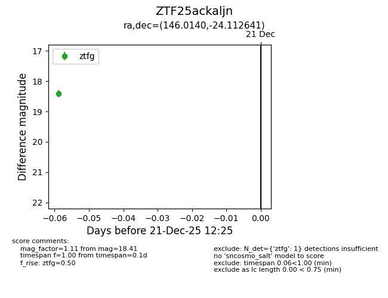
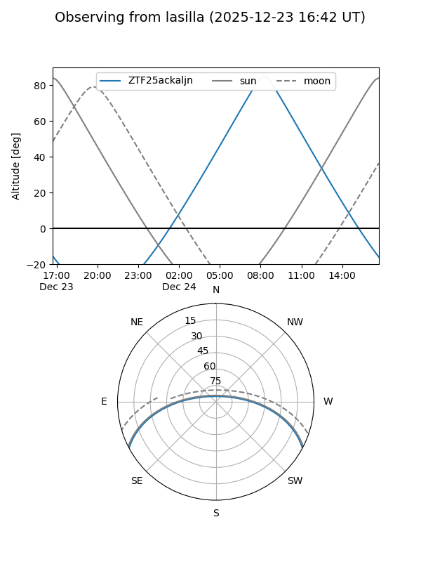
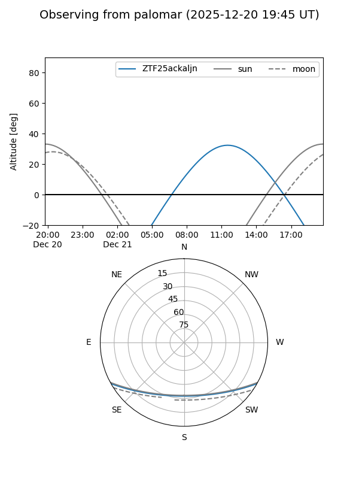

ZTF25ackaljn
Target ZTF25ackaljn at 2025-12-21 12:27
Aliases and brokers:
FINK: fink-portal.org/ZTF25ackaljn
Lasair: lasair-ztf.lsst.ac.uk/objects/ZTF25ackaljn
ALeRCE: alerce.online/object/ZTF25ackaljn
alt names
ZTF25ackaljn (ztf,fink_ztf)
Coordinates:
equatorial (ra, dec) = 146.0140,-24.11264
equatorial (HMS+DMS) = 09:44:03.37,-24:06:45.51
galactic (l, b) = (257.1645,+21.67402)
Flags:
Photometry:
last ztfg=18.41
1 ztfg detections
Lightcurve

Visibility


Additional plots